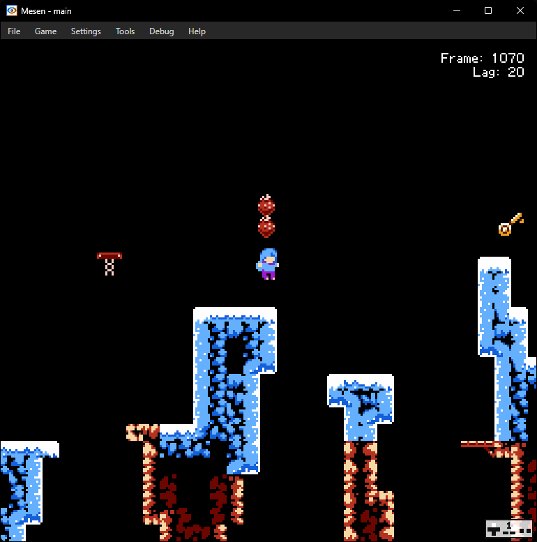

How does CelesteNES manage palettes? (DPLS)
In this article I want to explain what I do to manage palettes within CelesteNES. Note that only sprite palettes are managed by DPLS, not background palettes. Those might be managed separately with a manual setting or something.
The problem
The situation was once quite simple. There were four palettes loaded in at once:
- the player palette (beige, purple, and cyan)
- red
- green
- blue
Obviously some sprites do not fit into these palettes. Examples include elevators (gray), keys (gold), and Granny (white, beige, and green). Not to mention, dialogs come with their own problems which this also aims to solve.
Introducing DPLS
DPLS, a/k/a Dipples, a/k/a Dynamic Palette Loading System, is the palette manager within CelesteNES. As the name suggests, it manages sprite palettes dynamically. Here's how it works:
The player's hair, and then each entity, requests a palette, through
gm_allocate_palette. It may, or may not, be allocated. Remember, you can only have four sprite palettes on the NES, and the player's body occupies one slot, being hardcoded in unlike the rest.After the game loop ends, a backup copy of last frame's palettes is compared with the current list of palettes. If anything changes, the relevant NMI flag is set, and the NMI will upload the palette to the PPU properly.
Finally, when the game loop begins, the current palette is copied to the backup, then the relevant palette allocation variables are cleared.
The first screenshot with properly rendered keys: (they used to be green before I wrote this!) 
Conclusion
I know this article is shorter than the last one. There wasn't too much to explain, really. DPLS is a simple, yet versatile, system, that allows me to put entities with 2 types of palettes with no problems.
It also allows me to make Madeline's hair pink in The Summit which I might do at some point after the first demo comes out. Hopefully.